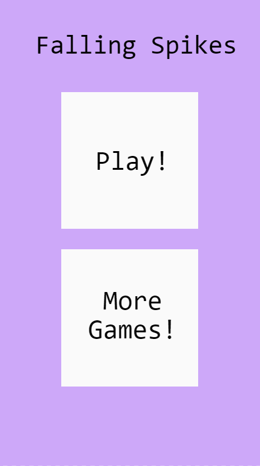
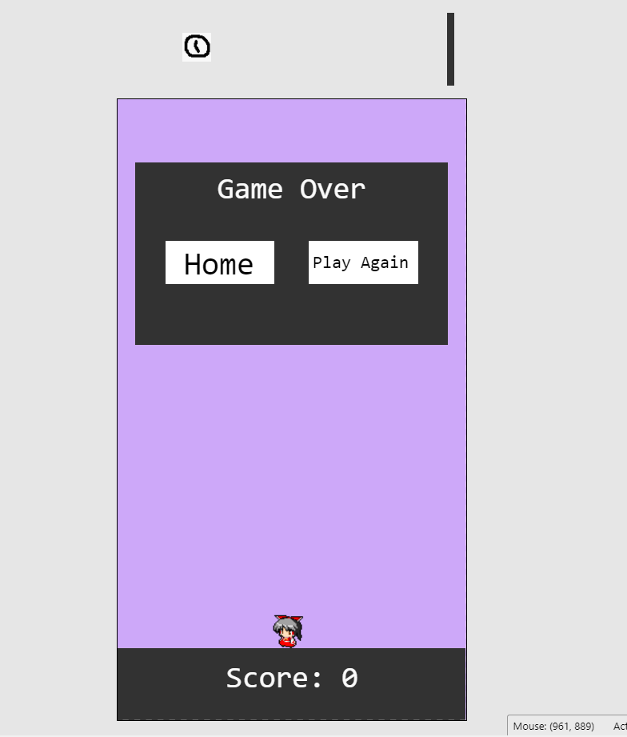

Construct 3 Layout
There are two parts to the layout of this game: the home screen and the game screen. The home screen just says the name of the game with two options: one to play the game that leads to the game screen and one that says "more games" which for now just leads the user to editor.construct.net. The game screen initially consists of just the ground, the player sprite, and the initial spike and power up that will fall once the game starts. There's also a game over HUD that stays invisible until the player gets hit by a spike, which gives the user the option to either play again from the beginning or go back to the home screen.
 